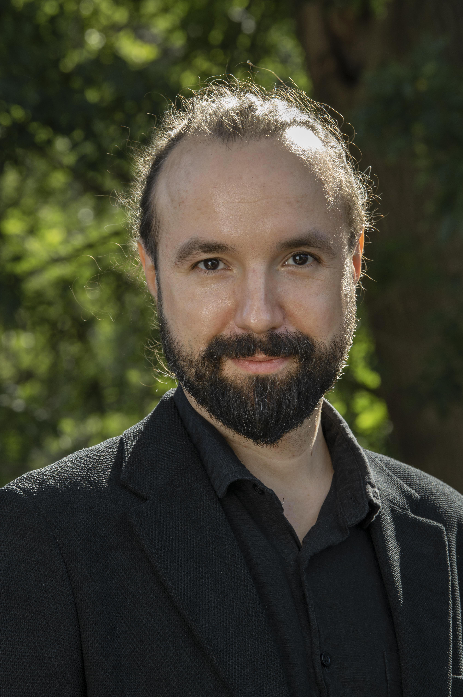

Altered developmental profile of the cortical head-direction signal in a rat model of Fragile X Syndrome.
Moore N, Duszkiewicz AJ, Asiminas A, Dudchenko PA, Peyrache A, Wood ER. Communications Biology, in press | Research Article [preprint]
The brain has an extraordinary ability to generate detailed internal representations of the world. We can experience this whenever we close our eyes and try to imagine where we are now, or when we wake up from a vivid dream. These experiences remind us that the brain does not simply process information arriving from our senses. Instead, it actively constructs an internal model of the self within an environment. But how does the brain create these representations, and how does it keep them accurately aligned with reality?
At the DuLab, we investigate the neural circuits and computations that allow the brain to accurately reconstruct the external world. We focus on the head-direction system, the brain's internal compass, a network of neurons that continuously tracks which way we are facing. This relatively simple but remarkably precise neural representation provides a powerful window into the fundamental mechanisms by which the brain builds, maintains, and updates its internal world models.
By combining large-scale recordings of neural activity, precisely controlled sensory environments and targeted circuit manipulations, we investigate how the brain integrates information from multiple streams to maintain an accurate sense of direction. We also study how such neural representations evolve during sleep, when the brain generates structured activity largely independently of external sensory input. Our ultimate goal is to uncover how neural circuits generate, maintain and update internal representations of the world, and what happens when these mechanisms fail.


Principal Investigator (adrian.duszkiewicz@manchester.ac.uk)
Adrian joined The University in Manchester in February 2026. He completed his PhD with Richard Morris at the University of Edinburgh, where he combined in vivo electrophysiology and optogenetics to investigate how dopaminergic circuits regulate memory persistence. During postdoctoral research at McGill University (with Adrien Peyrache) and the University of Stirling (with Paul Dudchenko), he turned his attention to the neural circuits underlying spatial orientation. His work has explored how excitatory and inhibitory neurons encode information, how sensory signals shape neural representations and how neural population activity evolves during sleep. More recently, he has also investigated how these processes are altered in rodent models of neurodevelopmental disorders.
Adrian’s publications can also be found on Google Scholar.
Moore N, Duszkiewicz AJ, Asiminas A, Dudchenko PA, Peyrache A, Wood ER. Communications Biology, in press | Research Article [preprint]
Gobbo F, Mitchell-Heggs R, Duszkiewicz AJ, Faillace E, Tse D, Garcia-Font N, Hazon O, Clarke K, Spooner PA, Keshishian A, Schnitzer M, Schultz SR, Morris RGM. Nature Communications, 17:11070 (2026) | Research Article
Duszkiewicz AJ, Fricker D, Burgalossi A, Peyrache A. Trends in Neurosciences, 48:829–840 (2025) | Review Article
Krausse S, Duszkiewicz AJ, Neftci E, Sommer FT, Renner A. bioRxiv, 2025.04.25.650191 | Preprint
Duszkiewicz AJ, Orhan P, Skromne Carrasco S, Brown EH, Owczarek E, Vite GR, Wood ER, Peyrache A. Nature Neuroscience, 27:782–792 (2024) | Research Article
Mehrotra D, Levenstein D, Duszkiewicz AJ, Skromne Carrasco S, Booker SA, Kwiatkowska A, Peyrache A. Current Biology, 34:3043–3054 (2024) | Research Article
Duszkiewicz AJ, Rossato JI, Moreno A, Takeuchi T, Yamasaki M, Genzel L, Spooner P, Canals S, Morris RGM. Hippocampus, 33:769–786 (2023) | Research Article
Peyrache A, Duszkiewicz AJ. The Cerebral Cortex and Thalamus, Oxford University Press (2023) | Book Chapter
Peyrache A, Duszkiewicz AJ. Cell Research, 31:605–606 (2021) | Research Highlight
Peyrache A, Duszkiewicz AJ, Viejo G, Angeles-Duran S. Progress in Neurobiology, 183:101693 (2019) | Review Article
Duszkiewicz AJ, McNamara CG, Takeuchi T, Genzel L. Trends in Neurosciences, 42:102–114 (2019) | Review Article
Duszkiewicz AJ, Peyrache A. Current Biology, 27:R63–R65 (2017) | Dispatch
Takeuchi T, Duszkiewicz AJ, Sonneborn A, Spooner P, Yamasaki M, Watanabe M, Smith CC, Fernandez G, Deisseroth K, Greene RW, Morris RGM. Nature, 537:357–362 (2016) | Research Article
Takeuchi T, Duszkiewicz AJ, Morris RGM. Philosophical Transactions of the Royal Society B, 369:20130288 (2014) | Review Article
Wacker DW, Tobin VA, Noack J, Bishop VR, Duszkiewicz AJ, Engelmann M, Meddle SL, Ludwig M. The Journal of Physiology, 588:4705–4717 (2010) | Research Article
Open research datasets and analysis resources will be featured here.
Interested in joining the lab? Get in touch to discuss research interests and potential opportunities.
Contact us